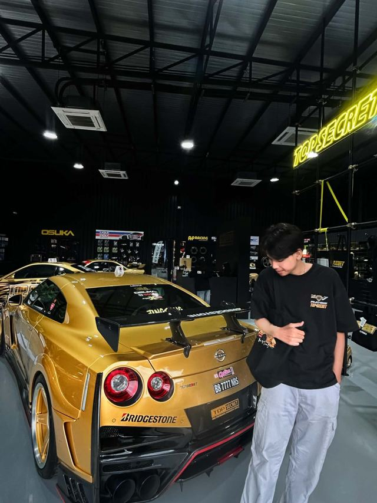

สเปกผู้ขับ ข้อมูลส่วนตัว
กรุงเทพมหานคร
1กก 8686
DRIVER

| ชื่อ-นามสกุล | ภัทร ใจเร็ว |
|---|---|
| ชื่อเล่น | ภัทร |
| วันเกิด | 1 มกราคม 2548 |
| การศึกษา | มหาวิทยาลัย ... คณะ ... สาขา ... |
| ตำแหน่งที่สนใจ | Frontend / Backend / DevOps |
| งานอดิเรก | ดูรถ แต่งรถ ขับรถเที่ยวเขา เล่นเกมแข่งรถ |
| คติประจำใจ | ช้าได้ แต่ห้ามหยุดพัฒนา |
ทักษะ ยิ่งยาวยิ่งแรง
HTML / CSS80%
JavaScript65%
Git / GitHub60%
Linux45%
DevOps (CI/CD)35%
แก้ปัญหาเฉพาะหน้า90%
เส้นทางที่ผ่านมา การศึกษา / ประสบการณ์
2566
เริ่มเรียนระดับมหาวิทยาลัย
เข้าศึกษาสาขาที่เกี่ยวข้องกับคอมพิวเตอร์ เริ่มรู้จักการเขียนโปรแกรม
2567
เริ่มเรียน Git และ DevOps
สร้าง Repository แรกบน GitHub และเรียนรู้การ Commit / Push อย่างเป็นระบบ
2568
ทำโปรเจกต์ของตัวเอง
พัฒนาเว็บไซต์ส่วนตัวและโปรเจกต์ฝึกงานร่วมกับเพื่อน
ปัจจุบัน
มุ่งสู่สาย Full-stack
ฝึกทั้ง Frontend, Backend และ DevOps เพื่อพร้อมลงสนามงานจริง
โรงรถในฝัน JDM ที่ชอบ
R34
Nissan Skyline GT-R
RB26DETT ตำนานก็อตซิลลา์ขับเคลื่อนสี่ล้อ
A80
Toyota Supra
เครื่อง 2JZ-GTE ที่จูนได้แรงสุดโต่ง
FD3S
Mazda RX-7
โรตารี่ 13B เสียงแหลมและบาลานซ์ดีเยี่ยม
S15
Nissan Silvia
ขวัญใจสายดริฟต์ SR20DET
AE86
Toyota Trueno
ตำนานเต้าหู้ แห่งเขาอุซุย